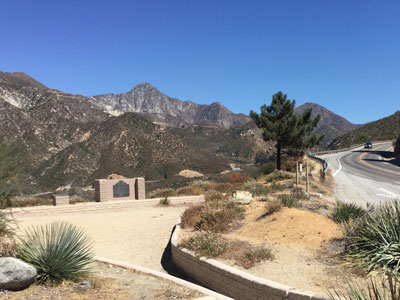
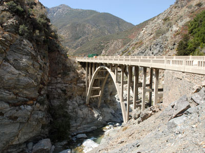
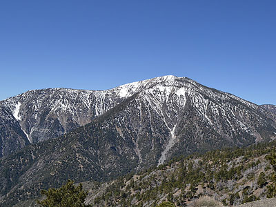
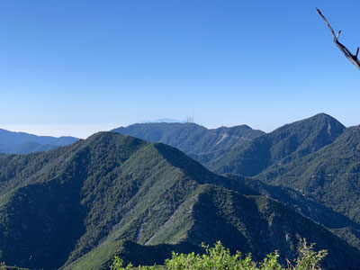

Mountain range located between the Los Angeles Basin and the Mojave Desert, and lies in, and is surrounded by, the Angeles and San Bernardino National Forests
General Information
Ranger Station (Glendora): Monday to Friday, 8am to 4:30pm
Closed daily from 1pm to 1:30pm for lunch and on federal holidays
Adventure Pass required for parking in some areas ($5/day or $30/year)
Available at ranger stations and authorized vendors
Must be leashed (max 6 feet)
Must wear current tags
Owners must clean up after pets
Pets not allowed to roam unattended or left in vehicles
Hike lower elevation trails in cooler months
Hike higher elevation trails in warmer months
How to Get There
From Los Angeles (49 mi): Take I-210 E toward Pasadena, exit at Azusa Ave and head north into the Angeles National Forest to access San Gabriel Mountains trailheads and recreation areas.
Overview
The San Gabriel Mountains rise steeply above the Los Angeles Basin, offering skiing, hiking and forested canyons within an hour of downtown. Part of the Transverse Ranges and formed by uplift along the San Andreas Fault, the range runs from Cajon Pass to Newhall Pass and lies largely within the Angeles National Forest, with a small part in the San Bernardino National Forest. President Barack Obama designated the core of the range as the San Gabriel Mountains National Monument on October 10, 2014, citing its cultural resources, wildlife and the demand for open space among the more than 15 million people living within about 90 minutes. The monument was expanded in 2024 and now covers more than 450,000 acres, managed by the U.S. Forest Service. The highest peak is Mount San Antonio (Mt. Baldy) at 10,069 feet, and Mount Wilson is famed for its observatory, which is open to the public. Rugged canyons, cool forests and peaks such as Mount Baden-Powell and Mount Islip make the range a favorite escape for Angelenos and a source of Los Angeles’s water.
Access
The range borders the northern edge of the Los Angeles area, and many trailheads are less than an hour's drive from downtown. Scenic Angeles Crest Highway (CA-2) climbs from La Cañada Flintridge deep into the mountains, while other main routes enter via Azusa Canyon, Glendora Mountain Road, Mount Baldy Road from Claremont and Upland, and CA-138 and CA-2 from the high desert side near Wrightwood. Public transportation is limited, so most visitors drive. Many parking areas require an Adventure Pass, available at ranger stations and authorized vendors. Roads in the range are steep and winding, and cell service is spotty, so bring water and check current conditions before you go.
Seasons
Spring and fall are the best times for most hikes, with comfortable temperatures and, in spring, wildflowers on lower slopes. Summer is hot at lower elevations, so hikers head to the high country around Mount Baldy and Mount Baden-Powell or to shaded canyon streams. Winter brings snow to the high peaks, with skiing and snowshoeing around Mount Baldy and Wrightwood. Angeles Crest Highway is normally closed in winter between Islip Saddle and Vincent Gap due to rockfall and avalanche hazards, and storms or wildfires can close other roads and trails for extended periods, so check with the Forest Service before traveling.
Things to Do
Hike and Climb the Peaks
Trails range from the one-mile family-friendly Devil’s Punchbowl loop to longer climbs such as the Mount Baldy Notch Trail and the Ontario Peak Trail, and a portion of the Pacific Crest National Scenic Trail passes through the monument. See the featured locations below for popular routes.
Drive the Angeles Crest Highway
The Angeles Crest Highway winds through the heart of the range, with overlooks and trailheads along the way. See the featured entry below for more.
Ski, Snowshoe and Enjoy the Outdoors
The monument supports biking, birding, fishing, horseback riding, backpacking and camping, and in winter, skiing and snowshoeing on the high slopes.
Visitor Centers
The Mount Baldy Visitor Center offers environmental education exhibits and includes a 1920s schoolhouse and reproductions of a gold-mining camp and a Tongva-Gabrielino village. The Chilao Visitor Center along Angeles Crest Highway has also been operated by the Forest Service, though it has been affected by highway closures, so confirm current hours. The Forest Service ranger station in Glendora is open weekdays and sells Adventure Passes, and it can provide current road and trail information.
Camping and Lodging
The Angeles National Forest has a number of Forest Service campgrounds in the range, many of them open seasonally and some with fees, as well as backcountry camping with permits where required. Most campgrounds are well suited to tents and small RVs, and sites at popular campgrounds fill on summer weekends. For motels and hotels, the closest options are in Glendora, Azusa and Claremont, with larger selections in Pasadena, La Cañada Flintridge and downtown Los Angeles within about an hour. On the desert side, Wrightwood has cabins and small lodgings.
This article uses material from the Wikipedia article "San Gabriel Mountains", which is released under the Creative Commons Attribution-Share-Alike License 3.0. Additional information from U.S. Forest Service.
Featured Locations and Trails

Craig Baker, CC BY-SA 4.0, via Wikimedia Commons; Image Size Adjusted

Angel Crest Highway
Two-lane highway over the San Gabriel Mountains through the San Gabriel Mountains National Monument and the Angeles National Forest

Thorsten Trotzenberg, CC BY 2.0, via Wikimedia Commons; Image Size Adjusted
.jpg){kind=link}
Bridge to Nowhere
Arch bridge built in 1936 in the San Gabriel Mountains, spanning the East Fork of the San Gabriel River and was meant to be part of a road connecting the San Gabriel Valley with Wrightwood

Eeekster, CC BY-SA 3.0, via Wikimedia Commons; Image Size Adjusted

Mount Baden-Powell
9,407 feet peak in the San Gabriel Mountains and the highest peak not part of the Mount San Antonio massif, named for the founder of the World Scouting Movement

Testuser47, CC BY-SA 4.0, via Wikimedia Commons; Image Size Adjusted
Mount San Antonio / Mount Baldy
Mountain colloquially referred to as Mount Baldy or Old Baldy, is a 10,066 ft (3,068 m) peak lying within the San Gabriel Mountains, and is the high point of the range, the county, and the Los Angeles metropolitan area

Crishazzard, CC BY-SA 4.0, via Wikimedia Commons; Image Size Adjusted

Mount Wilson
Peak in the San Gabriel Mountains, easily identifiable due to the large number of antennas near its summit, and is a subsidiary peak of nearby San Gabriel Peak